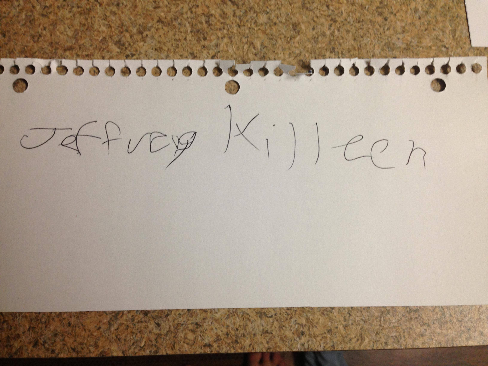
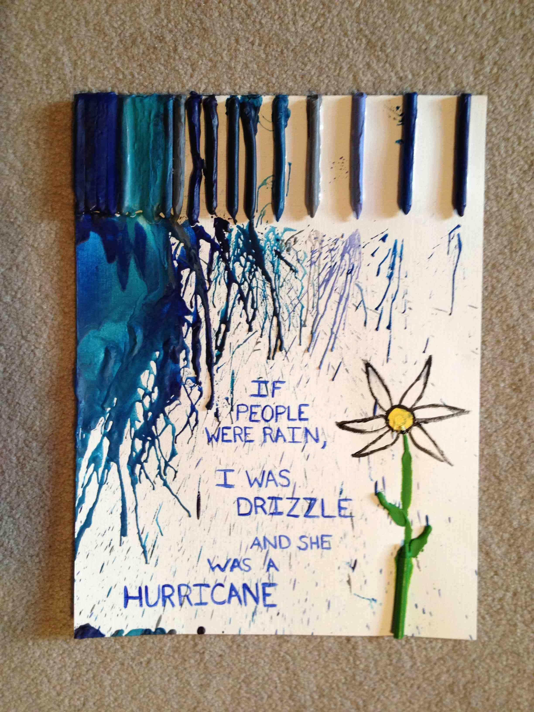

HELLO LINDSAY!
Website started 8/11/2013
Website last updated 8/30/2013
Where to begin?
So, you told me around our five month dateversary that you wanted my analysis of our relationship thus far, but I figured that a simple piece of paper wouldn't be good enough for you (It wasn't for me).
Also, it doesn't help that my handwriting looks like that of a troll:
But you get my point.
And Now: An Analysis of the Relationship Between JEFFREY TYLER KILLEEN & LINDSAY RACHEL URBANTHUS FAR
Let's get started, shall we?
BAR GRAPHS
From Now On: Jeff = left, Lindsay = right
Pimple Popping Comparison
Gross...As you can see, you have popped way more pimples on me than I have on you. Moving on...
Amount of Nipples
I Win Again
Number of Burps
It is nothing short of amazing that you have burped as much as you have without being able to do it on command.
Number of Times Looking Like a FREAK
Ah, here's a more even match up between the two of us. We are both really weird, really weird... REALLY weird. I mean, who would quote this?
See, you're weird.
But I'm also weird.
Stuff that you like that I do
Black & White...But Mostly White
One thing that you say you like is how straight-forward I am about things. (You've even exploited this for karma...sweet, precious karma). But it's not always the best way to go about things.

I have always been analytical about things, I like having proof, I like being able to know exactly how to do something. If there's not a definitive way to something, then I freak out sometimes. But not everything can be seen in black and white, but that won't stop me from trying. I've gotten better at this throughout the relationship, but it still comes up once in a while.
Our Relationship
A Good Description of Our Relationship
I think this picture sums us up pretty well. You constantly blow me out of the water with everything that you do.
August 28, 2013
This date will probably be important to remember. All I'm going to say is that I had to really update one of those graphs. Also, I love you.
Part II
And now, we begin part two of the relationship. Where will this take us? I don't really know, but I can't wait to find out. But the most important thing is that you're going to be right beside me for this.